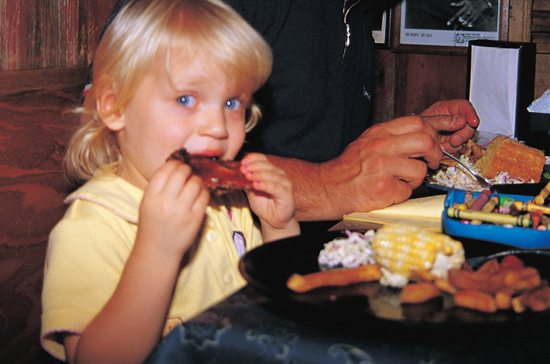

← Back to index
Cayenne Buttermilk Ranch Dressing
Category: Dinosaur Pantry

Ingredients
- 1 ¼ cups mayonnaise
- 1 cup buttermilk
- 1 tablespoon red wine vinegar
- 2 teaspoons minced garlic
- ¼ cup finely chopped chives
- 1 tablespoon lemon pepper
- ¼ cup freshly grated Parmigiano-Reggiano cheese
- 1 teaspoon kosher salt
- Freshly ground black pepper
- 1 teaspoon
Instructions
- Whisk all the ingredients together in a bowl. Pour into a container with a lid, and store in the fridge til needed.